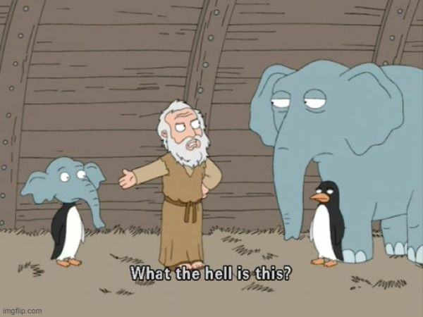

The two main purposes behind creating this website are:
- To develop a comprehensive picture of my body-of-work.
- To serve as an alternate, filtered medium of interaction, away from social-media.
Short Introduction:
I come from an engineering background, which is ironic, for my natural instincts align more towards philosophy and the arts,
while most of my life was spent obsessed with finance and markets on the side.
That makes me a chimera of sorts, without a defined niche.

I love reading and thinking. I believe in doing things intentionally, over a long-term horizon and with a preference for quality
and depth over utilitaranism.
I am a minimalist, and I love fine things. I also enjoy anything that has a rhythm to it, from cooking, music and languages,
to even cleaning and tidying up stuff.
I dislike sloppy thinking and regression to defaults.
Some fundamental ideas that drive my life: Anti-Library, and Asymmetry.
I am a great conversationalist and reasonably pleasant company, well, unless you catch me in one of my not infrequent moods.
But those can easily be taken care of with a nice cup of Coffee :).